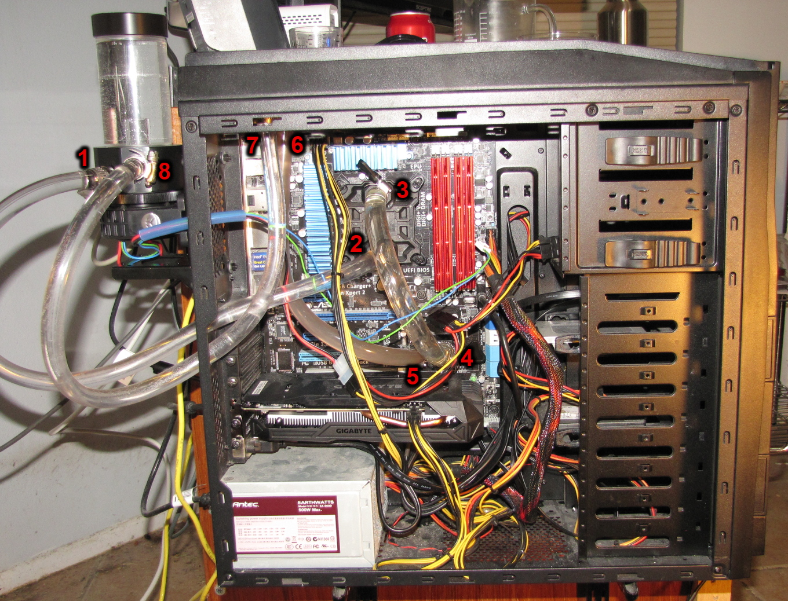

Home
Computer Water Cooling Flow
- Water exits pump
- The pump is a D5 pump in the bottom of the tube
reservoir. The pump is lubricated by the water, so it's quickly damaged if it runs dry. This style of reservoir guarantees that won't happen.
- It's much easier to fill and monitor the water level than other types.
- The reservoir is mounted in a rubber bushing to isolate pump vibration, and bolted to a 120mm fan bay.
- The long water lines allow the reservoir to be removed and flipped over to easily drain the entire system, so the usual T-drain is not needed.
- The pump is controlled by the motherboard fan PWM output, so when the CPU gets hotter, the BIOS spins up the pump.
- The case is an NZXT Tempest 410, which has space for the radiator on top, and holes for the half-inch water lines.
- Enters bottom of CPU water block
This water block replaces the usual fan and heatsink.
- Exits top of CPU water block
This flow direction removes air bubbles.
- Enters chipset water block
This replaces a very large heatsink usually mounted here on this motherboard.
- Exits chipset water block
- Enters radiator
- Exits radiator
- Enters water reservoir
And the loop is closed.
